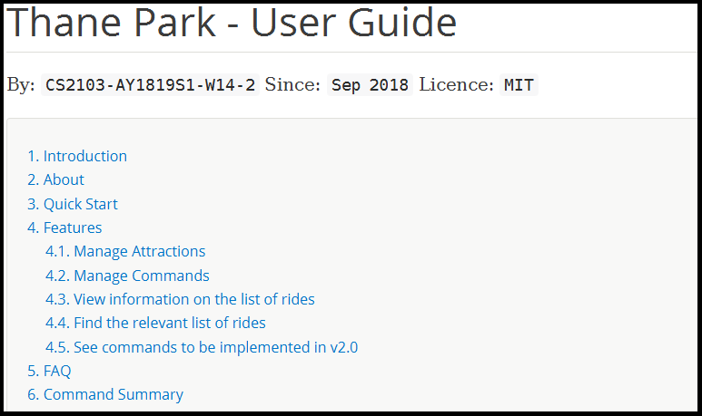

Project: ThanePark
1. Overview
This portfolio highlights my key contributions in project ThanePark.
ThanePark is a theme park management application primarily designed for theme park operators,
with the ability to manage and find essential theme park ride information at a glance.
This project was done as part of NUS CS2103 module requirement on 2018, to practice and showcase my ability to develop a Java application as a team of 4 undergraduate students taking the module. This project had a constraint of developing a Command Line Interface (CLI). In the course of this project, my team extended an existing AddressBook application to build this theme park management application.
2. Summary of Contributions
-
Major enhancement: Developed features that assists users in managing commands of the ThanePark application to improve user productivity.
-
What it does: It facilitates finding help on specific commands, assist users in completing commands, provide a mechanism to log and retrieve command history and gives users important information at a glance.
-
Justification: The primary role of theme park operators is to manage the ride they are stationed at. By making the application easier to use, operators will not find using the application a chore, can quickly perform required actions and focus on managing their ride.
-
Highlights: This enhancement affects existing commands and can be easily extended on addition of new commands. There is an added challenge of reducing dependencies across the
Logic,Model,StorageandUIcomponents of ThanePark. -
Credits: j2html library to aid formatting of HTML reports.
-
-
Code contributed: Code
-
Other contributions:
-
Roles:
-
Team Lead: Responsible for directing the scope of the application.
-
Code Quality: Responsible for identifying areas of improvement in code written by team mates.
-
Deliverables and Deadlines: Responsible for managing team deadlines of the project.
-
Integration: Responsible for handling integration of code across all team members.
-
-
Project management: Managed releases
v1.3-v1.4(2 releases) on GitHub -
Enhancements to existing features: Updated the GUI color scheme (Pull Requests #102)
-
Community:
-
Reviewed Pull Requests (with non-trivial review comments): (Pull Requests #12, #48, #82, #99)
-
Contributed to forum discussions: (Issues #1, #89, #94)
-
-
Tools:
-
Installed Travis CI, coveralls and autodoc for team repository
-
Integrated a third party library (j2html) to the project (Pull request #79)
-
-
3. Contributions to the User Guide
Given below are sections I contributed to the User Guide. They showcase my ability to write documentation targeting end-users. |
3.1. Viewing help: help
Displays short summary of important commands. You should see a similar-looking summarized help
sheet as shown below.
Format: help
Extended usage of help command: If you want to see the full help manual, use help [more].
If you want to see the full help for a specific commandWord, use help [commandWord].
Should you provide an invalid [commandWord], you will be shown the default short help message.
Please note that any arguments beyond the 2nd position will be discarded and ignored.
|
Please note that the short help only shows the rough syntax of commands. If you want the full help,
do refer to this User Guide. You should also note that help will cause the currently selected Ride to be deselected.
|
Examples:

|

|
3.2. Suggesting commands: {tab}
Displays suggested list of commands when TAB is pressed.
Format: TAB
Examples:
|
3.3. Viewing history of previous commands: history
Displays previous user inputs during this session. Does not include the executed history itself.
Format: history [more]
Extended usage of history:If you wish to get a report of all commands executed across sessions, use history more and a report will be generated.
|
The xml file produce by ThanePark was not designed for you to read.You may experience loss of command history information when commandHistory.xml exceeds 5MB
or is unintentionally modified.
|
Examples:
|

|
4. Contributions to the Developer Guide
Given below are sections I contributed to the Developer Guide. They showcase my ability to write technical documentation and the technical depth of my contributions to the project. |
4.1. Current Implementation
The Command Management feature is responsible for making ThanePark application easier to use.
It can be decomposed into the following segments:
Help
The help mechanism is facilitated by the ShowHelpRequestEvent.
When the user executes a HelpCommand, the required level of help is encoded in ShowHelpRequest.
This event type is subscribed to by MainWindow, which will load the respective help page in the required window
(BrowserPanel or HelpWindow). Most of these classes belong to the User Interface (UI) component.
These interactions are illustrated in the class diagram below:
Autocomplete
The autocomplete mechanism is facilitated by SuggestCommand.
It extends Command and serves as a special kind of Command that cannot be directly invoked by the LogicManager.
A new instance of SuggestCommand is created whenever ThaneParkParser fails to find a matching CommandWord,
or when TAB is pressed inside the Command Box. See the 2 figures below:


The application will then proceed with executing the SuggestCommand, which returns prefix-matched Command s.
These matching Command s are reflected in both CommandResult and ShowHelpRequestEvent, which will in turn update
ResultDisplay and CommandBox text. See figure below:

You can easily add other pattern matching heuristics such as nearest word distance by implementing the following interface, PatternMatcher:
public interface PatternMatcher {
/**
* Matches a list of items as Strings against a given pattern.
*/
public String[] matchPattern(String[] items, String pattern);
}A possible implementation of a prefix matcher is shown below:
public class PrefixMatcher implements PatternMatcher {
private static final String PATTERN_PREFIX = "^%1$s.*";
/**
* Default constructor
*/
public PrefixMatcher() {
;
}
@Override
public String[] matchPattern(String[] items, String pattern) {
return Arrays.stream(items).filter(s
-> s.matches(String.format(PATTERN_PREFIX, pattern))).toArray(String[]::new);
}
}History
The history mechanism is facilitated by CommandHistory and CommandsLogCenter.
CommandHistory maintains the history as a list of user inputs during the session,
and interfaces with CommandsLogCenter to handle the retrieval and persistent storage
of user inputs executed across sessions.
Given below are 2 example usage scenarios to illustrate the behavior of the history mechanism.
-
Example scenario 1: User requests for current session’s history.
Step 1. User executeshistory.
Step 2. The list of user inputs in the current session is retrieved fromCommandHistory.
Step 3. ANewResultAvailableEventis raised within theLogiccomponent. Step 4. The result panel displays the list of user inputs upon notification by the event. -
Example scenario 2: User requests for cumulative history.
When the cumulative history of all commands is requested through history more command, a HTML report is generated.
The process of generating a HTML report upon execution of history more is illustrated in the Sequence Diagram below.
4.2. Design Considerations
Aspect: Handling UI interactions in help
-
Alternative 1 (current choice): Subscribe
MainWindowtoShowHelpRequestEvent.-
Pros: Cohesive. Every
UIcomponent affected byShowHelpRequestEventare handled throughMainWindow. -
Cons: Difficult to implement. Interactions between
MainWindowand its childUIcomponents must be carefully handled. Easy to cause bugs if not handled appropriately.
-
-
Alternative 2: Subscribe
BrowserPanel,HelpWindowandRideListPaneltoShowHelpRequestEvent.-
Pros: Easy to implement. These
UIcomponents can directly perform whatever is required. -
Cons: High dependency. When a modification to
ShowHelpRequestEventis required, all of these classes may need to be modified.
-
Aspect: Handling autocomplete text replacement
-
Alternative 1 (current choice): Handle autocomplete text replacement through
SuggestCommandEvent.-
Pros: Flexible. Easy to modify text replacement behavior through
SuggestCommandEvent. Can be used by both Tab and Enter. Open for extension to other keystrokes or actions that lead to autocompletion. -
Cons: Difficult to implement as it requires some understanding of the
EventsCenterand handling of the various Event types in the application.
-
-
Alternative 2: Handle autocomplete through the existing
NewResultAvailableEvent.-
Pros: Easy to implement. Can modify
NewResultAvailableEventto easily satisfy most requirements. -
Cons: Difficult to extend. When modifying behavior of text autocompletion, modification of both
CommandBoxandResultDisplaymay be required.
-
Aspect: Storing command history
-
Alternative 1 (current choice): Store every command entry in a separate xml file.
-
Pros: Flexible. Able to format the file with little constraint to meet storage requirements.
-
Cons: Low code reuse. Does not utilise the existing
LogsCenterfor ThanePark.
-
-
Alternative 2: Store command entries using the existing
LogsCenterfor ThanePark.-
Pros: High code reuse. Developers know that all logging within the ThanePark is done by
LogsCenter. -
Cons: High dependency and difficult to implement. When a modification to
LogsCenteris required, the modification of command history storage may be required. Additionally, the parsing of command history from the existingLogsCenterlogs may require substantial modifications.
-